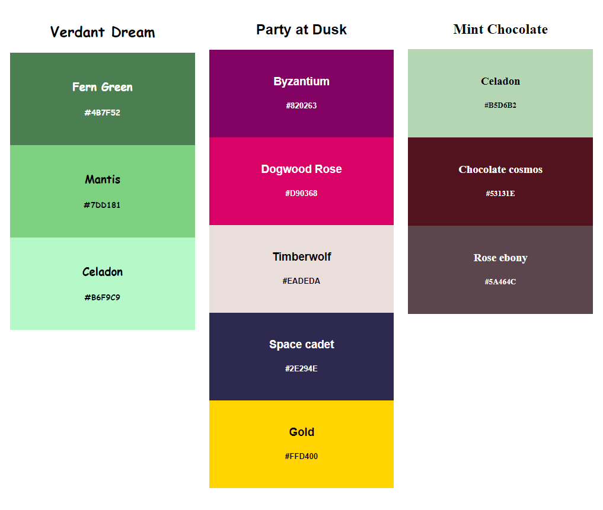
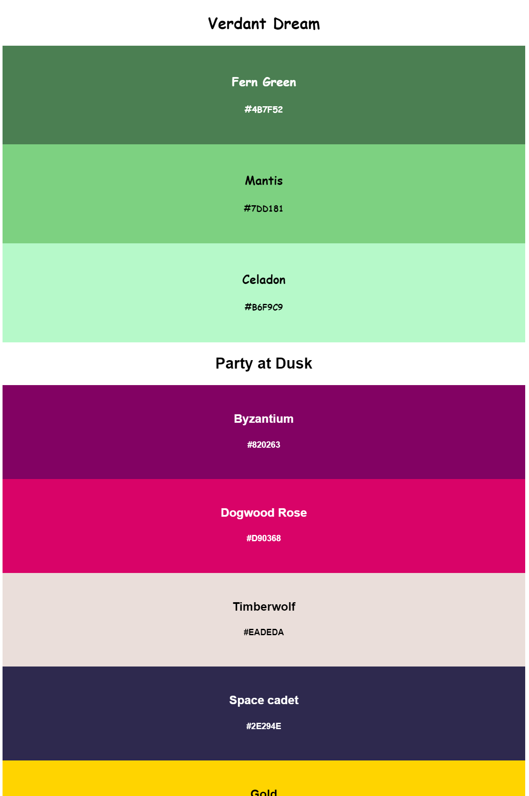

NOTE: This image is not a representation of the final product for this assignment; your color palettes will be stacked on top of each other, not side by side. However, a screenshot like that doesn't fit well in Canvas, so we chopped them up and put them side by side to illustrate the total work you'll be expected to do.
OBJECTIVES:
-
- Create three unique color palettes of 3-5 colors each
- Practice using the CSS Properties you've learned today
NEW CONCEPTS WE'LL BE USING:
-
- CSS Rules
- CSS ID Selectors
- CSS Properties
HOW TO COMPLETE:
While we learned a ton of new concepts today related to CSS, we're still rather limited in that we only know how to change the color and font properties of elements. So this exercise is meant to be a simple yet practical application of those concepts: we're going to have you build out some color palettes using HTML and CSS!
Your instructor will be demoing how to build one color palette based on the instructions below; however, feel free to charge ahead and attempt it on your own at your own pace if you're confident!
-
- First off, let's modify your code-skeleton project to include a new CSS file, and link it as well, so that you don't need to manually do this for every assignment in the future
- Now that you've modified it to include a CSS file, duplicate your code-skeleton project folder inside of your repository folder, and rename the duplicate "color-palettes"
- Your objective is to create THREE (3) unique color palettes.
- Feel free to visit a color palette generator like https://coolors.co/ if you have trouble coming up with color palettes yourself.
- In terms of text content, each color palette should include:
- a name
- 3 - 5 colors, including both the color name and its hexadecimal representation
- In terms of the HTML, each color palette should include:
- a heading for the color palette name (<h2> - <h6>, your choice)
- a <div> element for each color
- each containing two additional headings (again, your choice of <h2> - <h6>)
- the primary heading and each <div> element should have unique id attributes
- In terms of the CSS,
- The primary heading element should be targeted and given the following CSS properties:
- The <div> elements should be targeted and given the following CSS properties:
- background-color
- color
- font-family
- text-align
- padding: 24px; (we haven't learn this one yet; just trust us that you will want to have it here)
- Each palette should use a different font-family.
When completed, your preview window in Visual Studio Code will NOT resemble the image at the top of the assignment; instead, your three color palettes should be stacked on top of each other, as in the screenshot below (which only shows 2-ish of the 3 color palettes above):

Later, when we learn more CSS, you'll be able to build a layout with content side by side, but for now, we're going to keep things simple and leave them stacked.
CHALLENGE
You are not limited to ONLY using the CSS properties specified above; we learned quite a few other CSS properties like:
Feel free to add additional id attributes and CSS properties to further customize your color palettes' text!
HOW TO SUBMIT:

-
- SAVE ALL OF YOUR WORK BEFORE PROCEEDING (inside Visual Studio Code)
- Open your Github Desktop app and commit and push any changes you made in the project folder
- Go to github.com in the Google Chrome browser and ensure the changes to your project folder were "pushed" up to your github.com repository
- Open the Github Pages site (Settings -> Pages -> Visit site)
- or alternatively, go to the Environments/Deployments section of your repository page, click "github-pages", and then click the most recent deployment
- Add your project folder name at the end of your URL
- Open the link to your new webpage for the project.
- Confirm it actually works before you submit it!!!
- Copy the URL in the address bar and submit it to receive credit for this assignment.
- Example URL: http://username.github.io/code-skeleton/
- This example assumes you followed the initial setup instructions correctly; if you deviated or made any mistakes, your URL may look a little different